Assembly for modifications
The full aircraft as one STEP file, exported from Onshape in millimetres. Opens in Onshape, Fusion, SolidWorks and FreeCAD.
- All 53 printed parts in position
- Motors, servos, screws and carbon tubes for reference
R.A.M.P.A.T. takes off vertically, tilts its rotors forward to cruise on its wing, and costs under $1,000 to build. The CAD, printable parts and flight controller PCB are free to download.
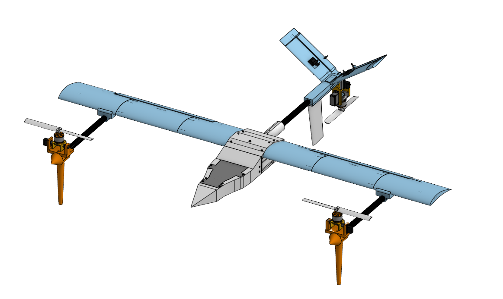
Drag to rotate · right-drag to pan · click, then scroll to zoom
One ZIP with the files you need to modify, print and wire the aircraft.
RAMPAT-all-files.zip · 19 MB
Only need part of it? Get the CAD files or PCB files on their own tabs.
Total build time, including printing and sourcing parts, is under 48 hours.
Get the full file set, or just the STL pack if you are printing an unmodified airframe.
Print the 53 parts in LW-PETG. Left and right parts are separate mirrored files, so print each file once.
Slot the parts onto the carbon tubes, then fit the motors, tilt servos, battery and flight controller PCB.
Hover test first, then transition, then fixed-wing cruise. The full procedure is on the Results tab.
Most VTOL drones carry separate motors for hovering and for forward flight. R.A.M.P.A.T. tilts the same three rotors between both, which cuts weight and cost.
A servo-driven tilt mechanism in each nacelle sets the motor angle for each flight mode. Tiltrotors exist, but this is the first 3D-printed tiltrotor built for disaster response.
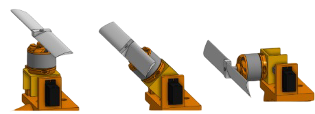
Three airframes, each rebuilt around what the last one got wrong.
A low-cost VTOL built from foam and cardboard. It was too fragile to fly stably, but it proved the concept was worth pursuing.
Proof of concept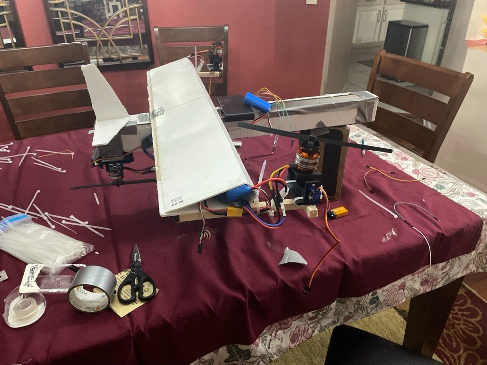
The airframe moved to modular printed parts. Testing showed a misaligned center of gravity, high drag, and structural instability from the wooden spars.
Airframe and aerodynamics needed a full revision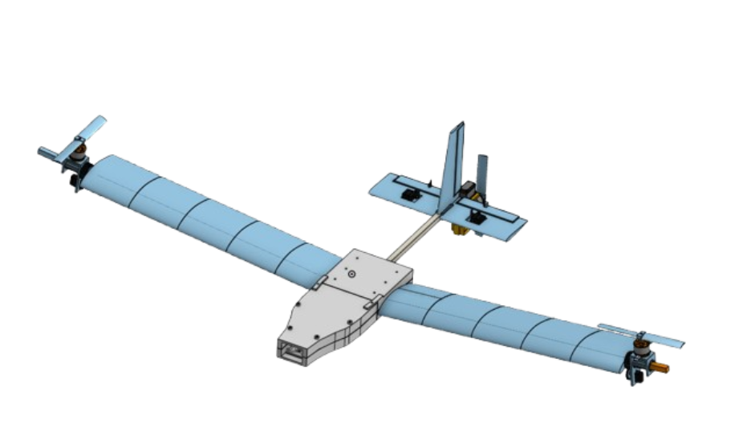
Wooden spars and booms became carbon fiber for strength, weight and correct balance. CFD drove a streamlined fuselage and a V-tail, and a part-slotting system holds it all together.
Stable structure and flight performanceIn the past decade, more than 400,000 people died in natural disasters, most of them in developing countries. Aerial reconnaissance helps first responders find survivors and assess damage, but capable drones cost over $10,000.
The STEP assembly is for changing the design: fitting a different camera, motor or battery. The STL pack is every part ready for your slicer.
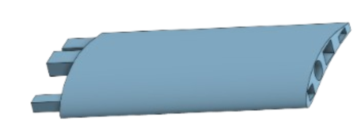
The full aircraft as one STEP file, exported from Onshape in millimetres. Opens in Onshape, Fusion, SolidWorks and FreeCAD.
One STL per printed part, sorted into wing, fuselage, nacelles and tail folders, with a parts list that maps each file to its CAD name.
Broke a part in the field? Download and reprint just that one. Pick a section to filter the list.
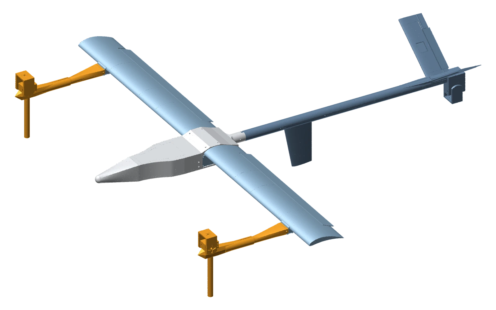
The airframe is designed for LW-PETG, a foaming PETG that prints light enough for long-endurance flight and stays waterproof outdoors. Use gyroid infill throughout. Each part card above shows its profile.
| Parts | Wall loops | Gyroid infill |
|---|---|---|
| Fuselage shells nose cone, front, center | 1 | 3% |
| Wings wing panels, ailerons | 1 | 5% |
| Connectors joiners, mounts, root plates, pins | 3 | 20% |
| Everything else | 2 | 20% |
Set LW-PETG temperature and flow for the density your filament brand recommends.
Electronics and hardware that are not printed. Carbon tube sizes come from the CAD.
| Part | Spec | Qty |
|---|---|---|
| Brushless motor | LC2835-12T | 3 |
| ESC | 30 A | 3 |
| Propeller, front puller | 13×4 CCW | 2 |
| Propeller, rear pusher | 13×4 CW | 1 |
| Tilt servo | MG995R | 3 |
| Control surface servo | SG90 | 4 |
| LiPo battery | 4S 8000 mAh | 1 |
| Power distribution board | Standard PDB | 1 |
| Flight controller | Custom PCB | 1 |
| Carbon tube, main wing spar | 16 × 1391 mm | 1 |
| Carbon tube, tail boom | 20 × 921 mm | 1 |
| Carbon tube, front motor booms | 20.5 × 375 mm | 2 |
| Carbon rod, wing | 6.5 × 1250 mm | 1 |
| Socket head screws | McMaster 91290A111, A120, A170, A176 | — |
Parts slot together along the carbon tubes, so a damaged section comes off and a new print goes on. A crash becomes a quick reprint instead of a lost aircraft.
The wing is split into panels on a carbon fiber spar for stiffness. The three-part fuselage holds the battery, PCB and thermal camera.
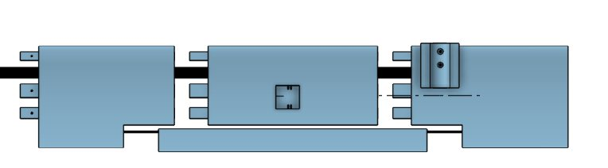
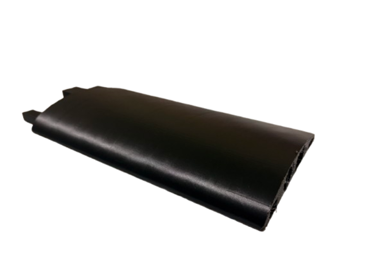
Off-the-shelf flight controllers with the features this aircraft needs cost over $500. A custom board brought that down by 85%, using off-the-shelf sensors and custom control software.
From requirements to a logged flight.
The tiltrotor's design and its sub-$1,000 budget ruled out commercial controllers. The board needed:
The board that came out of it
The schematic and layout were drawn in KiCad 9 on a four-layer, 122.5 × 61.5 mm board, with traces routed between the microcontroller, sensors, radio, servo outputs and ESC outputs.
The Gerber and drill files exported from this layout are what you upload to a PCB fab.
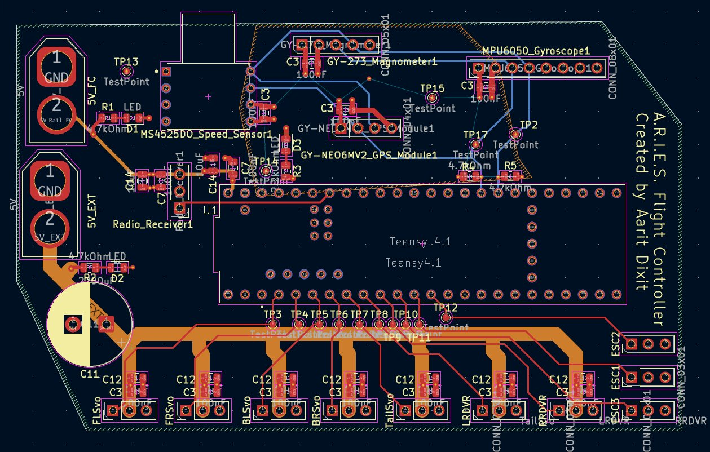
The board was fabricated, then populated with off-the-shelf sensor and radio modules. Keeping the modules standard means they can be swapped if one fails.
The firmware reads the IMU, fuses the data into an attitude estimate, compares it to the desired position, and drives the motors and servos through PID control and control mixing.
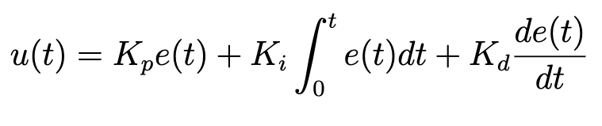
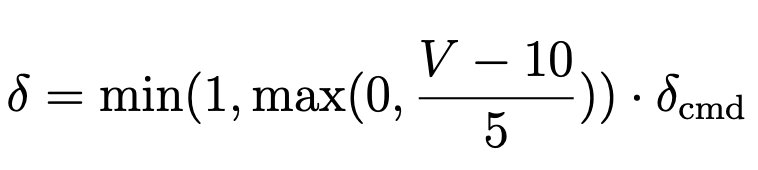
Control surfaces fade in between 10 and 15 m/s, as the wing takes over from the rotors.
Every flight logs time, throttle and power draw to a microSD card. A cubic regression of power against airspeed from these logs fed the endurance results.
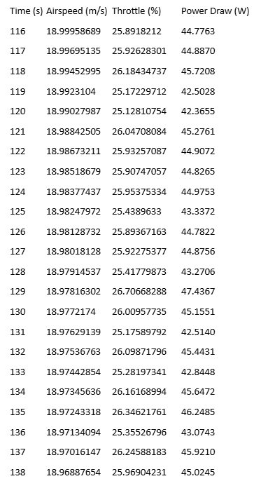
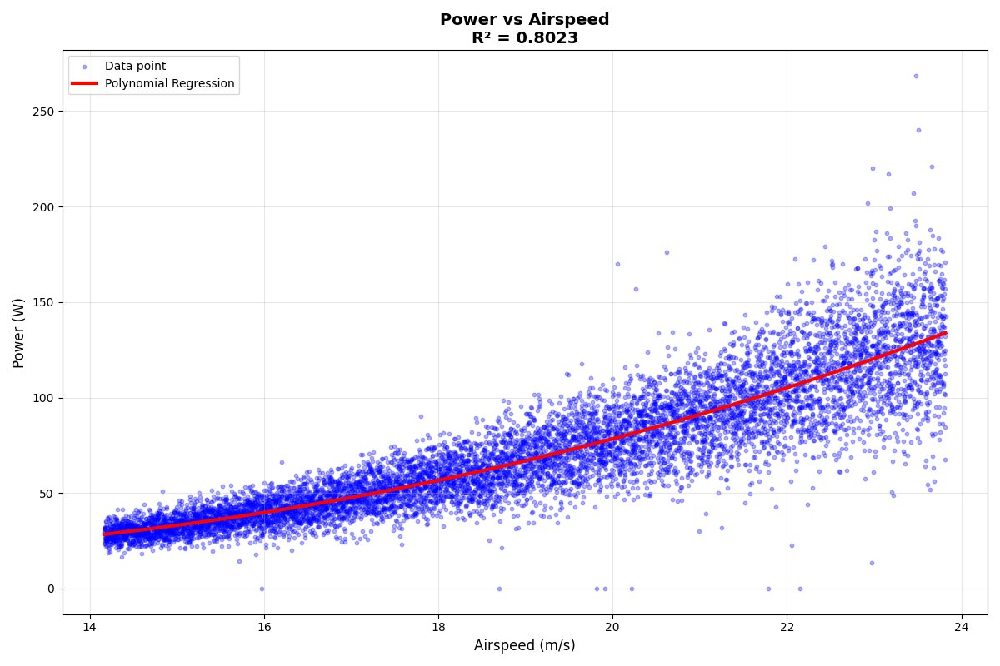
Upload this ZIP as-is to a PCB fab such as PCBWay or JLCPCB. Choose 4 layers, 1.6 mm thickness and HASL finish; the fab reads the board size from the files.
Check the battery connector polarity against the board's silkscreen markings. Power the board with the motors disconnected and the propellers off, and confirm telemetry and sensor readings before arming.
The airframe went through seven geometries in SimScale. Each round cut high-pressure areas on the front of the aircraft and increased low pressure over the top of the wing.
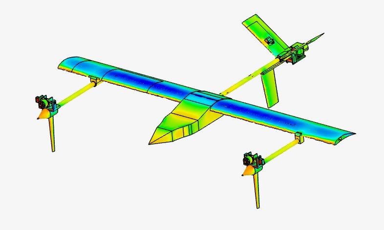
Velocity and pressure fields around the final geometry at four cruise speeds.
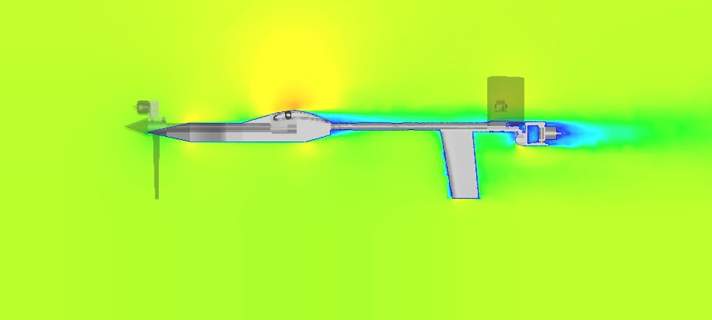
Side view. Blue areas are slower air; red areas are faster.
Surface pressure on the first and final airframes. Red is high pressure, which adds drag.
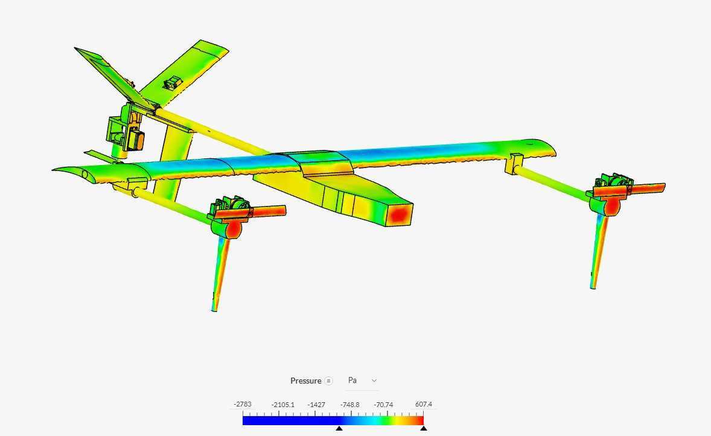
Reducing the red areas on the nose, nacelles and landing gear cut pressure drag.
Increasing the blue area over the wing raised lift. Together these raise the lift to drag ratio.
The NACA 6409 airfoil makes high lift at lower speeds, which increases payload capacity.
The CFD solutions converged at every speed, and flight tests landed within the predicted bounds.
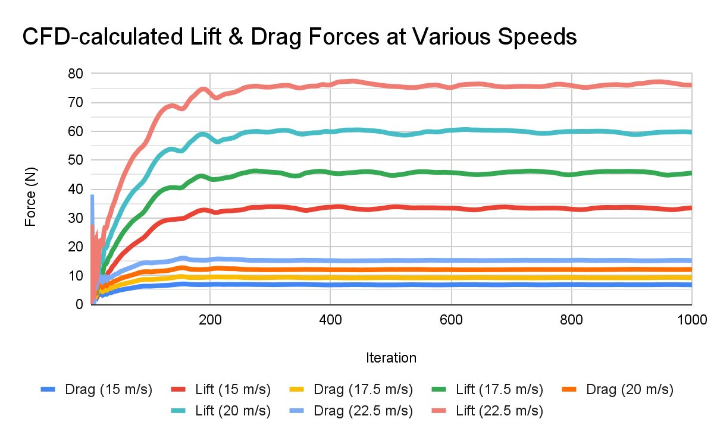
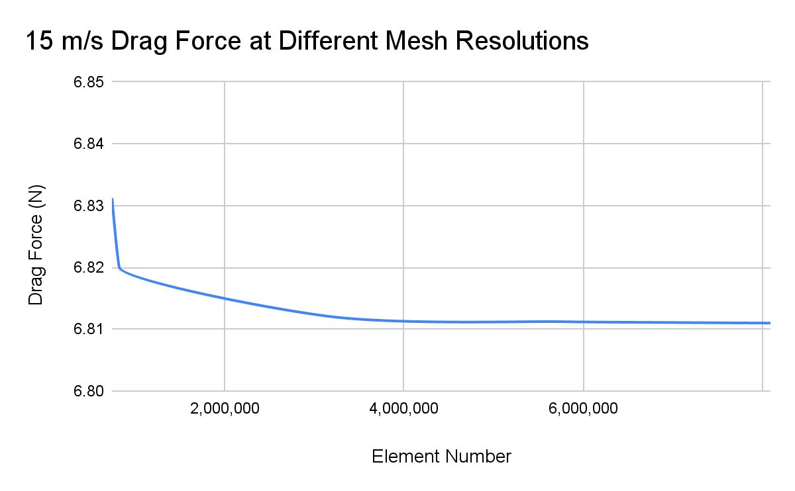
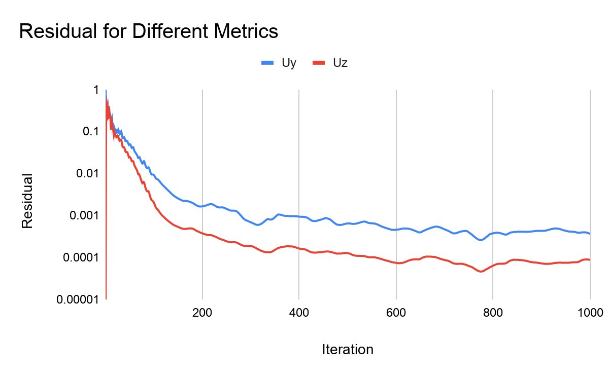
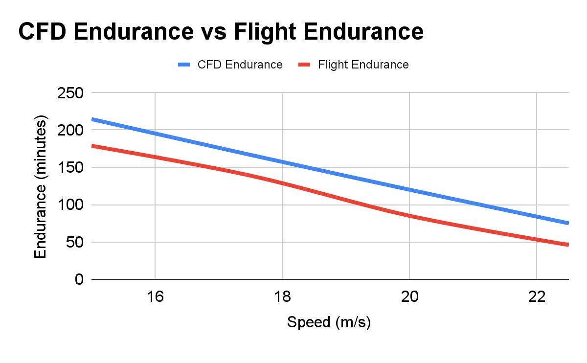
Across 15 repeated test flights, R.A.M.P.A.T. matched mid-tier commercial UAVs in endurance and search area, and outperformed low-cost multirotors by 4 to 6 times.
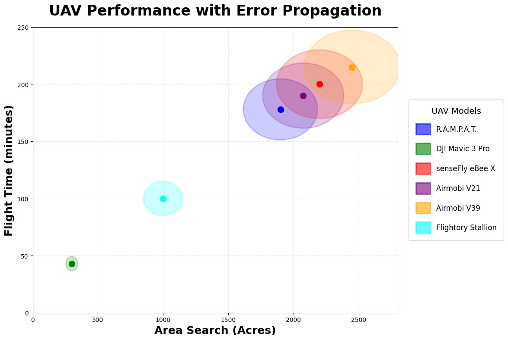
All three were met, based on flight data.
Over 1,800 acres of search capability and over 2.75 hours of endurance.
Materials cost under $1,000. The build came in at $978.
Swappable parts and vertical takeoff and landing.
Commercial figures are manufacturer-reported ranges. R.A.M.P.A.T. figures come from repeated testing, with 12% uncertainty.
| UAV | Flight time | Search area | Cost |
|---|---|---|---|
| R.A.M.P.A.T. | 178 min | 1,900 acres | $978 |
| DJI Mavic 3 Pro | 43 min | 300 acres | $2,500 |
| senseFly eBee X | 200 min | 2,200 acres | $10,000 |
| Airmobi V21 | 190 min | 2,075 acres | $10,000 |
| Airmobi V39 | 215 min | 2,450 acres | $11,000 |
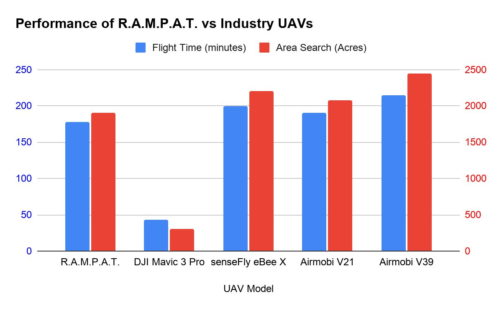
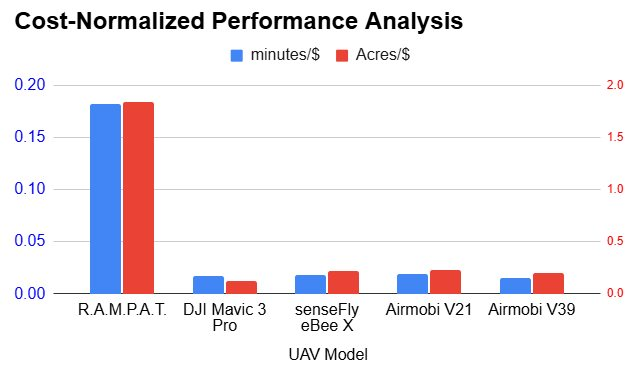
Repeated 15 times to measure variance.
Install the battery, power the avionics, and check telemetry and control surfaces. Arm and confirm hover, transition and fixed-wing modes.
Take off vertically and hold altitude for 5 minutes, logging current draw and gyroscope data.
Climb to 50 ft, enter transition mode and hold throttle for 2 minutes, logging gyroscope and airspeed.
Switch to fixed-wing mode and cruise for 10 minutes, logging gyroscope, airspeed and power.
Transition back to hover, land vertically, then disarm and power down.
Future work focuses on real-world mission capability, more autonomy, scaling deployment, and further environmental and operational testing.
One direction is swarms: several aircraft networked together to cover a search area faster.
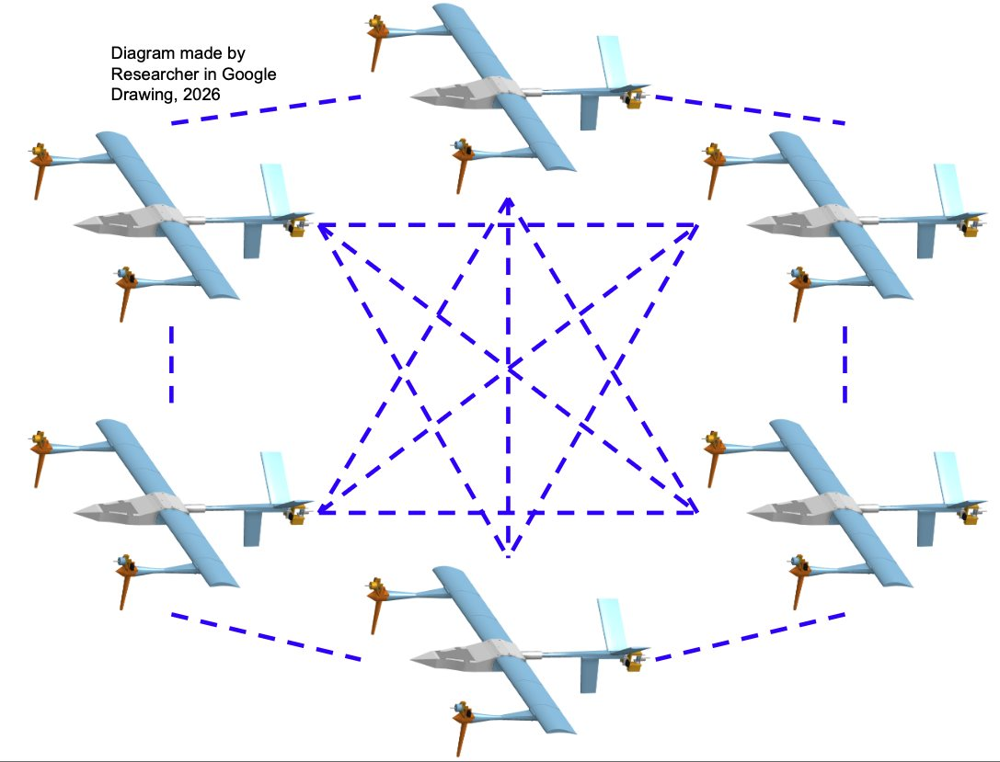